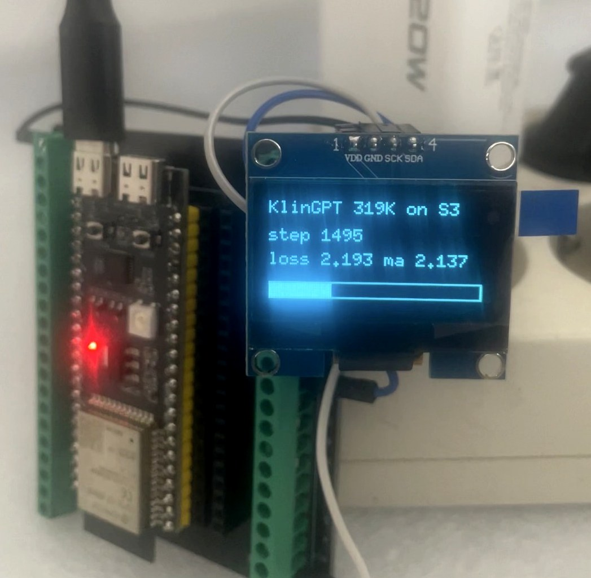
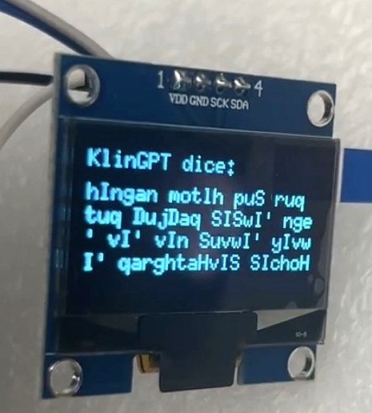

319,000 parameters. Two days on a phone charger. Zero pretraining, anywhere, ever.
Every "runs AI on a $5 chip" project we've covered on this blog shares one thing in common, and it isn't the hardware — it's that the model was born somewhere else. Someone trains it on a GPU or in a datacenter, quantizes it, and only then ships the finished weights down to the tiny board, which just has to run them. An independent builder going by Carloscodix just built the other half of that story: a 319,000-parameter transformer that is trained — forward pass, backpropagation, and every weight update — entirely on an $8 ESP32-S3 microcontroller, over roughly two days of continuous compute, powered by an ordinary phone charger.
Source & credit: the model, the hand-written C backpropagation, the gradient-check test suite, and the writeup are all the independent work of Carloscodix. Everything below is our summary and framing; go read the original, it's worth your time: github.com/Carloscodix/qapla (Apache 2.0). Also covered by Hackster News on August 5.

The project this one is answering
Carloscodix names the comparison directly in the README, pointing at a project we featured on this blog nine days earlier: slvDev's esp32-ai, which packed a 28.9-million-parameter model onto the same class of chip by streaming most of its weights from flash instead of holding them in RAM. That's a real, hard engineering achievement — and, in the builder's own words, it's still fundamentally the same shape as every other on-device AI demo: "The esp32-ai project by Slava S. (slvDev), and others like it, all share one thing: they are inference. The model is born somewhere else — a GPU, a datacenter — trained on its data, quantized, and only then loaded onto the chip so it can run it."
The question that motivated Qapla' was what happens on the other side of that split: "what happens when the model can't be born outside? What happens when it can't come pre-trained — because the data it needs to learn doesn't exist until the device is in place?" That's a real constraint for genuinely edge-native use cases — a sensor learning the specific acoustic signature of one machine, a device adapting to one user's handwriting — where there is no pre-existing dataset to train on anywhere else. Qapla' doesn't solve that problem yet. What it proves is that the mechanism — a full training loop, gradients and all, running on a microcontroller — actually fits.
The hardware and the model
The whole rig is an ESP32-S3 N16R8 (with PSRAM) and an optional 1.3" SH1106 OLED over I2C to show live progress, built with PlatformIO, running off a standard USB phone charger. The model itself is deliberately small and simple: a single transformer block, single-head causal attention, a ReLU feed-forward network with LayerNorm, and tied input/output embeddings — about 319,000 parameters total, over a 31-character vocabulary with a 32-character context window. The entire training state — weights, gradients, momentum buffers, and activations — fits in roughly 1.3 MB, comfortably inside the board's memory budget.
Architecture 1 transformer block, 1 attention head, ReLU FFN + LayerNorm
Vocabulary 31 characters
Context 32 characters
Parameters ~319,000 (weight-tied)
Training state ~1.3 MB (weights + grads + momentum + activations)
Optimizer SGD, momentum 0.9, cosine learning-rate schedule
Steps 5,000, over ~2 days of continuous on-chip computeTraining data was the Klingon-language corpus from the boQwI' / klingon-assistant-data project (Apache 2.0) — a deliberate choice of a small, structurally unusual, copyright-clean text: Klingon's phonotactics (capitalized mid-word consonants like Q and tlh, apostrophes as real phonemes) stress a 31-symbol character-level vocabulary differently than English would, and the corpus is small enough that a 319K-parameter model can plausibly learn its shape without needing gigabytes of text.
The loss curve, measured on-device
The OLED display doubled as the only logging system — every number below was read directly off the board as training progressed, not computed after the fact on a bigger machine:
| Step | Batch loss | Moving average |
|---|---|---|
| 1,495 | 2.193 | 2.137 |
| 2,549 | 1.982 | 2.035 |
| 4,905 | 1.996 | 1.871 |
Moving-average loss dropped from 2.137 to 1.871 across the run — real, monotonic improvement for a character-level model with no pretraining head start of any kind. It's not a benchmark score anyone would recognize; it's a from-scratch training curve, on a $8 chip, with no GPU ever in the loop.
No autograd — and proof it isn't wrong
There's no PyTorch, no autograd, no framework anywhere in this project. Every derivative of the forward pass is hand-written in C. That's the kind of claim that's easy to get subtly wrong, so the repo ships a gradient-check test comparing every hand-derived gradient against a centered finite-difference approximation of the same forward pass:
cc -O2 -DHANDGPT_DOUBLE -DNV=11 -DNC=16 -DNT=8 tests/gradcheck.c -lm -o gradcheck && ./gradcheckWorst relative error across every parameter: 1.07 × 10⁻⁸, against a 1 × 10⁻⁴ threshold — four orders of magnitude of headroom. That's the difference between "the loss number went down, so it's probably fine" and an actual, checkable proof that the math is correct.

What it can't do, honestly
319,000 parameters and a 5,000-step run on a single small corpus does not produce a model that speaks Klingon, or English, or anything else fluently — and nothing in the project claims otherwise. What comes out is character-sequence text that has picked up some of the corpus's texture (word lengths, common substrings, the apostrophe-heavy punctuation pattern) without anything resembling grammar or meaning. That's exactly what a loss of 1.87 nats per character on a 31-symbol vocabulary predicts, and it's a world away from what even a 1B-parameter pretrained model produces. The honest framing here matters more than the output: this is a proof that the training mechanism — full backprop, gradient descent, weight updates, all on-chip — fits and works on hardware this small. It is not a claim that the resulting model is useful for anything beyond demonstrating that.
Why training-at-the-edge is a different claim than inference-at-the-edge
Every DIY project on this blog so far — the ESP32 inference builds, the Jetson robots, the home-lab clusters — makes the same privacy argument: the model comes to your data, instead of your data going to the model, because inference happens locally. Qapla' pushes that argument one step further, into territory almost nothing "on-device AI" actually touches: if the learning itself can also happen on the device, then there's no point in the pipeline — ever — where training data has to leave, because it never has to go anywhere to begin with. Today that's a 319K-parameter proof of concept on a Klingon dictionary, not a foundation model. But the mechanism it demonstrates — that full gradient-based training fits in kilobytes, on a chip with no OS, audited line-by-line by one person — is the actual precondition for a device that adapts to data that only ever existed at the edge in the first place.
Discuss this on the forum → — seen another from-scratch on-device training project? Point us at the repo.